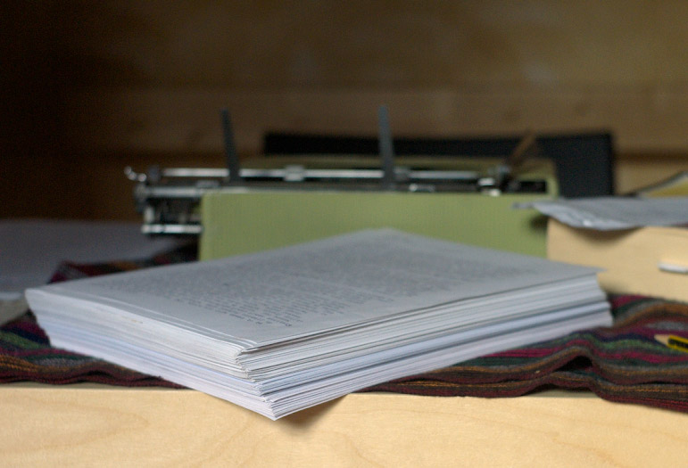

The Body’s Long Madness
Valerie leaves the United States of America to travel on a one-way ticket, alone. Valerie is a young woman who has vowed to discover her true self, for this she will sacrifice anything and everything. She lives in disregard for her corporeality, denies her physical reflection.
Besides that handy introduction, I believe the least said about The Body’s Long Madness, the better.
Rough drafts are as follows:
The Firsts: Four first lines I have struggled with.
Characters: Isaac, Arianna, Klaus
Travelling: The Train, Brittany #1111, How Sonia Slept, Eid ul-Adha, The Desert Nomad
Rome: Behold! A Pantheon, On a Bench
Inspired: Reflections, Blood and Guts, Femininity and the Present, The Tree with its Life in the Air, Sex
